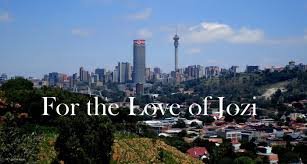
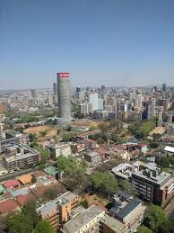
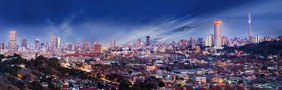
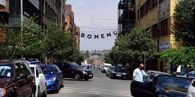
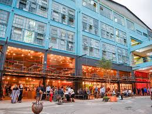
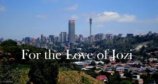
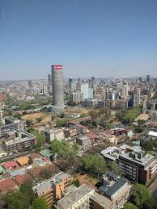
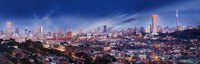
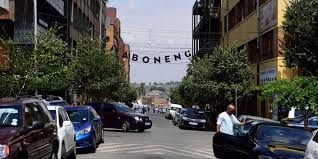
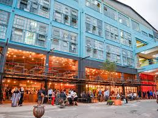

Johannesburg, South Africa's biggest city and capital of Gauteng province, began as a 19th-century gold-mining settlement. Its sprawling Soweto township was once home to Nelson Mandela and Desmond Tutu. Mandela’s former residence is now the Mandela House museum. Other Soweto museums that recount the struggle to end segregation include the somber Apartheid Museum and Constitution Hill, a former prison complex.
 








